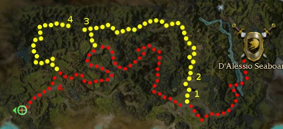

Elite: None / not listed

Click to enlarge · Local cache · Wiki
The players rescue the village of Hakewood then the Temple of Tolerance from the undead threat, and obtain the Scepter of Orr for the White Mantle .
Region: Kryta · Mission: 8 of 25 · Type: Cooperative
Lend aid to the White Mantle in their fight against the undead.
Follow the path until the nearby village (point 1 on the map) and eliminate all the undead there. You do not need to save any of the villagers, but a morale boost is gained each time you do. If you wish to complete the bonus, Benji Makala must survive.
If ignoring the bonus, simply speak to the Gate Guard then travel through the swamp to the west.
If going for the bonus, you have to take the path north instead (yellow on the map), behind Gate Guard Makala, and open the lever-operated door at the end to catch up with the initial path to the Temple of Tolerance (point A).
Upon arrival, Confessor Dorian is added to your party and the battle will begin against several waves of undead. There is a Shrine of Mending that provides +3 health regeneration to living creatures in its area of effect. After waves of skeletons and ghouls, a quest marker appears above Dorian, and one final wave of enemies will spawn 3–4 minutes later. Dorian instructs the player to retrieve the Scepter of Orr from his scribe Dinas, located further to the west. However, Dorian may still die if left alone, causing mission failure. It is highly recommended to stay and protect him from that final wave before heading to Dinas (and/or doing the bonus).
Follow the ettin infested path to Dinas (who might be fighting a boss) and speak to him to end the mission.
The bonus involves carrying the Offering to Melandru (point 3) to the offering stand (point 4). Since the bridge from the pick-up point to the drop-off point is broken, you have to go the long way around it, through the temple.
First at the settlement, ensure Benji survives from the boss that spawns near him. Run straight towards him once he is added as ally to the party window.
If having troubles, consider using a speed boost or alternatively flag heroes or henchmen ahead, as the boss will only start attacking the NPC when a player enters compass range. Note that this technique can be used for the bonus in the following mission (Divinity Coast) as well.
After the boss is killed, you can trigger the bonus from Benji immediately (a green marker appears above his head), however you still have to ensure he survives the entire assault, protecting him again on his way to the Shrine of Mending, as Gate Guard Makala (point 2) will not let you pass through the north gate until the village is cleared and his brother safe. Be careful not to overaggro, especially Zombie Warlocks and their minions.
At the end of the northern path (yellow on the map), a swamp populated by undead, you will reach the Offering and a door operated by a lever that connects to the main path.
The offering in itself is a bundle item. As such, it will slow you down and prevent you from using your weapons while carried. If dropped, the offering will break, requiring you to return and retrieve another one.
At this point you have to make a choice. You can choose to take the offering first, ignoring its drawbacks, or proceed with the mission objectives first, clear the path and come back to the Offering later. The first choice is usually faster since you avoid backtracking, while the second choice is safer.
Many foes will gather around Dorian before you have time to reach him. It is recommended to proceed directly to the temple and protect him first (ignoring the Grasping Ghouls; they will stop to fight the White Mantle Guard).